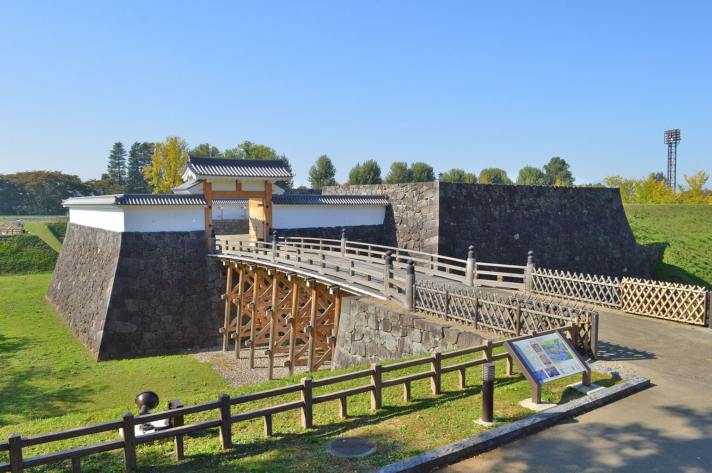

山形縣的歷史
山形県の歴史 \ History of Yamagata Prefecture
山形縣初期
山形市歷史悠久，市內發現了古墳時代的遺跡（嶋遺跡）。日本實施律令制之後，山形市地區屬於最上郡。在平安時代初期的文獻《和名類聚抄》中，記載有在今山形市南側有「山方鄉」（「山方」和「山形」同音），此為「山形」地名的由來。平安時代時，山形市轄區大部分地區屬於皇室領莊園大山莊。在平安時代末期，山形名為最上，是出羽路上的主要宿場之一。進入鎌倉時代後，關東武士團開始成為山形縣各地的統治者。這些武士團在之後以地名為勢力名稱，開始本地化。
山形的中期
室町時代中期，斯波兼頼（日語：斯波兼頼）攻入村山地方，並之後改以「最上」為姓，包括山形市在內的村山地方自這一時期至江戶時代初期是最上氏的勢力範圍。 關原之戰後，最上氏的石高一度達57萬石，山形也因此得到發展。然而1622年（元和8年）之後，最上家因內訌頻繁而被轉封，此後山形城領主頻繁變更，石高也被大幅削減，城市陷入蕭條。18世紀時，山形城的武家屋敷已被拆除，改為農地。 幕末時期，山形城本丸內甚至都沒有建築。與城下町相對的是，七日町、十日町等町人町則因紅花貿易而日益繁榮，成為東北地方前列的商業城市。
廢藩置縣之後，山形成為山形縣的所在地。和許多舊城下町利用城郭土地興建政府設施相對，山形縣將縣廳等政府機構和公共設施修建在新市區，舊城下町的格局因此並未發生大幅改變。1889年，山形正式設市，成為日本首批「市」之一。 1929年，山形市開始實施土地區劃整理事業，是較早實施土地區劃整理事業的城市，建成區加速擴大。山形市轄區範圍亦在1931年和1943年兩次擴大。在第二次世界大戰中，山形市是日本少數未遭到空襲的縣廳所在地城市。
山形的晚期
二戰之後，山形市在1954年進行了大規模合併，市轄區面積擴大了近20倍。1960年代土地區劃整理事業加速實施之後，更加快了山形市市區擴張的速度。1968年，山形市制定了山形市都市開發基本計劃。1975年，山形縣廳自市中心搬遷至市區東部之後更加快了山形市近郊地區的開發。1992年，山形新幹線開業，使得山形市和東京之間的陸路交通有所改善。山形市原本以南北方向的街道為主。但在1990年代之後，山形市在山形站附近地區進行大規模開發（代表工程是霞城Cenral（日語：霞城セントラル）），並興建東西方向的道路，以促進市區活性化。2001年，山形市成為特例市；2019年4月1日，山形市再升格為中核市。